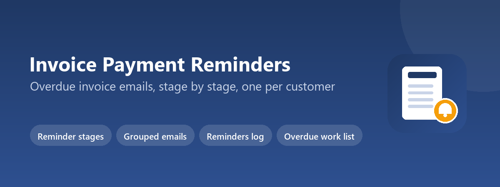

Automatic email reminders for overdue customer invoices, stage by stage, with one email per customer.
Describe your reminder schedule once, for example a friendly reminder 7 days after the due date, a firmer one after 15 and a final notice after 30. A daily job then emails each customer the reminder that is due and keeps a record of everything it sent.
📅 Reminder stagesEach stage has a name, a number of days after the due date and its own email template. |
📧 One email per customerAll the invoices of a customer that reached the same stage are listed in a single email. |
📝 Reminders SentEvery reminder is recorded with the invoice, the stage, the address it went to, the days overdue and the amount due at the time. |
📋 Overdue Invoices listA work list with days overdue, amount due, the stage reached and the last reminder date, with ready-made filters. |
🏢 Multi-company readyEach company has its own schedule and sender address, and one job serves them all. |
🔎 On the invoiceA Reminders button on each invoice opens the reminders it has received. |
Odoo 18.0 • Community & Enterprise • depends on Invoicing • Licence LGPL-3
Odoo implementation and development. thecodelegion.com